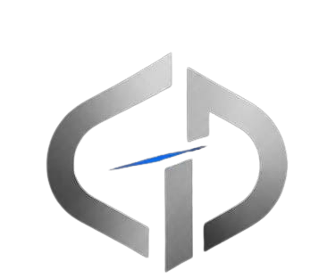

D
CO-FOUNDER
Disrup
Software development, web applications and building digital products.
GitHub profile ↗
CHRONODISRUPTHE PEOPLE
Chronodisrup was founded by two developers with a shared interest in software engineering, security and the possibilities of technology.
CO-FOUNDER
Software development, web applications and building digital products.
GitHub profile ↗CO-FOUNDER
Developer utilities, Python projects, AI experiments and technical exploration.
GitHub profile ↗LOOKING AHEAD
As the company grows, we intend to welcome people who care about thoughtful engineering, responsible security work and continuous learning.